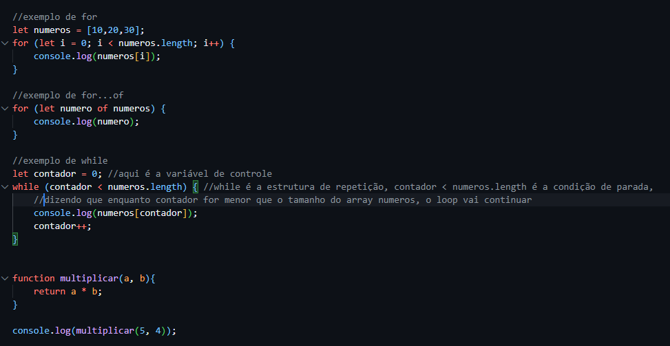

O laço for é usado para repetir um bloco de código um número específico de vezes. A sintaxe básica é:
for (inicialização; condição; incremento) {
// código a ser executado
}
O laço while é usado para repetir um bloco de código enquanto uma condição for verdadeira. A sintaxe básica é:
while (condição) {
// código a ser executado
}
O laço for ... of é usado para iterar sobre os valores de um objeto iterável, como um array. A sintaxe básica é:
for (const elemento of array) {
// código a ser executado
}
Na imagem abaixo, você pode ver um exemplo de como os laços for e while são utilizados em JavaScript:
